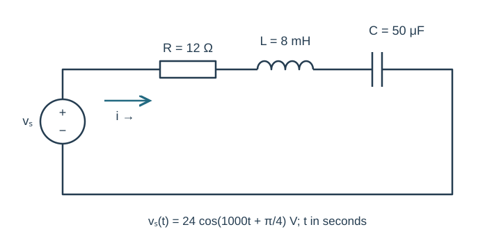
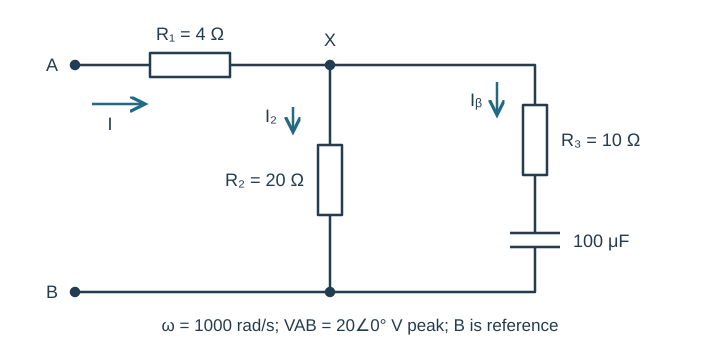
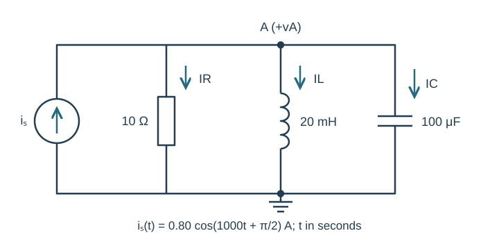
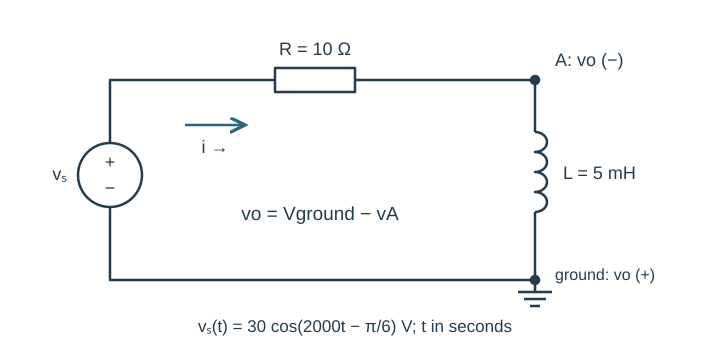
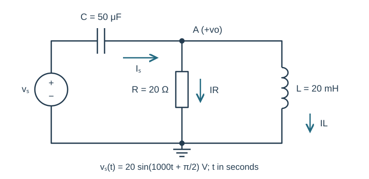

Course practice / Batch 14 / 2026-10-12 PDT
ENGR 202
正弦、相量与阻抗
Sinusoids, phasors & impedance · 第 14 组：HW 1 风格 5 题 + HW 2 风格 5 题
Read a leading sine using a cosine reference
The voltage is \(v(t)=8\sin(1000\pi t+\pi/6)\;\mathrm V\), with t in seconds.
- Find peak amplitude, angular frequency, frequency and period. Write the equivalent positive-amplitude cosine and its peak phasor.
- Calculate v(0), the first positive maximum, first downward zero crossing and first minimum at or after t=0. Give event times in ms.
- Sketch one period on labeled time/voltage axes and mark the calculated events in chronological order.
中文提示（不含解答）
正弦转余弦时相位减去 90°；求事件时间时选第一个非负结果。
Invert a delayed cosine and keep both phase changes
Let \(x(t)=5\cos(1200t-2\pi/3)\;\mathrm V\) and \(y(t)=-x(t-\pi/3600\;\mathrm s)\).
- Find the peak phasor of the delayed signal before the minus sign is applied, then X and Y with positive magnitudes and principal phases.
- Find the delay in ms and as a fraction of the period. Account separately for the phase change from the delay and from inversion.
- Write y(t) as a positive-amplitude cosine. Compare x(0), y(0), x(T/4), y(T/4), and draw X and Y to scale.
中文提示（不含解答）
外面的负号不是时间移动；它额外带来半圈相位变化。
A quotient and a product both enter quadrant two
Let \(a=2-j5\) and \(b=-3+j1\).
- Compute a − b, ab, a/b and 1/b in rectangular form.
- Convert a, b, ab and a/b to polar form with positive magnitudes and phases in (−180°,180°].
- Verify (a/b)b = a and b(1/b) = 1. Plot a and b to scale; explain the quadrants of the product and quotient from their rectangular signs.
中文提示（不含解答）
相位主值必须配合复平面象限；乘法和除法最后都可以用直角坐标复核。
A small negative real part changes the phase quadrant
The voltage is \(v(t)=7\cos(400t+\pi/2)+3\sin(400t-\pi/6)\;\mathrm V\).
- Write the two cosine-reference peak phasors and add them in rectangular form.
- Find the total positive magnitude and principal phase, then write v(t) as one cosine. Check the original and combined forms at t=0 and t=π/800 s.
- Draw a tip-to-tail plot with equal real/imaginary scales and explain why a one-argument atan of imaginary/real would select the wrong principal quadrant here.
中文提示（不含解答）
先把正弦相位减去 90°；实部很小也不能忽略其正负号。
Choose an amplitude for a purely imaginary total
Consider \(v(t)=A\cos(1000t+\pi/3)+3\cos(1000t+\pi)\;\mathrm V\), where A is a nonnegative real amplitude. Choose A so that the cosine-reference total phasor is purely imaginary with positive imaginary part.
- Express the total rectangular phasor in terms of A and determine the required A.
- Give the resulting phasor, positive-amplitude cosine expression, and equivalent signed-sine expression. Check v(0) and v(π/2000 s).
- Plot both component phasors and their sum to scale. Explain why a positive imaginary phasor gives a negative sine term under the stated cosine convention.
中文提示（不含解答）
这次要让实部抵消，而不是让虚部抵消；时域重构使用实部取值的约定。
A capacitive loop gives a positive imaginary current
The source \(v_s(t)=24\cos(1000t+\pi/4)\;\mathrm V\) drives series R=12 Ω, L=8 mH and C=50 μF. Current is clockwise from the source positive terminal; element voltages are passive drops in that direction.
- Copy the time-domain circuit and draw its impedance circuit, including the source phasor. Find ZL, ZC, total Z and I in rectangular/polar form.
- Write steady-state i(t), calculate VR, VL and VC, and verify KVL. State whether current leads or lags the source and by how much.
- Predict i(0) and i(π/2000 s). For optional LTspice, give frequency in Hz and sine-source phase, then compare both phase positions after transients settle with units, cursor readings and the stated current direction.

中文提示（不含解答）
电容与电感先合并带符号的虚部；电流相位等于源相位减去总阻抗相位。
Reduce a resistor feeding a resistor-and-RC split
At ω=1000 rad/s, terminal A connects through R₁=4 Ω to node X. One X-to-B branch is R₂=20 Ω; the other is R₃=10 Ω followed by C=100 μF in series. B is reference. Apply VAB=20∠0° V peak. Input current flows A to X; branch currents flow X to B.
- Draw the impedance circuit. Show the series RC branch, parallel block and total ZAB reductions, giving total impedance in rectangular and polar form.
- Find input current, VX and both branch-current phasors.
- Find the R₁ drop and check KCL and VAB=VR1+VX. State whether input current leads or lags the applied voltage.

中文提示（不含解答）
先完成 R₃ 与 C 的串联，再与 R₂ 并联，最后加入 R₁。
Keep all three parallel branch currents
The source \(i_s(t)=0.80\cos(1000t+\pi/2)\;\mathrm A\) injects current upward into node A. Separate parallel branches R=10 Ω, L=20 mH and C=100 μF connect A to ground. Define vA positive at A and all branch currents downward.
- Copy the circuit and draw the impedance version with source phasor. Calculate total admittance and equivalent impedance.
- Find VA in rectangular/polar form and write vA(t). Compute IR, IL and IC and verify KCL using complex components.
- Predict vA(0) and vA(π/2000 s). Explain why adding the three current magnitudes is not a valid KCL check; optionally verify the two voltage samples in a late steady-state simulation cycle.

中文提示（不含解答）
并联相加的是导纳；电感和电容的导纳符号相反，但本题不会完全抵消。
Reverse the probes across an inductor output
The source \(v_s(t)=30\cos(2000t-\pi/6)\;\mathrm V\) connects through R=10 Ω to node A. L=5 mH connects A to ground; source negative is grounded. Define clockwise current from source through R and L. The output probes are deliberately reversed: vo=Vground−vA, with positive probe at ground and negative probe at A.
- Draw the impedance circuit and find I. First calculate the passive inductor drop VL=vA−Vground, then obtain Vo with the stated reversed polarity. Give Vo in rectangular/polar form.
- Write vo(t), find the resistor drop VR, and verify the correct KVL relationship Vs=VR−Vo.
- Predict vo(0) and vo(π/4000 s). Explain how swapping the output probes changes phase and waveform sign without changing the circuit current.

中文提示（不含解答）
先按被动符号求电感电压，再因探针反接乘以 −1；不要更改电路电流的参考方向。
A capacitor feeds a parallel RL node
The source \(v_s(t)=20\sin(1000t+\pi/2)\;\mathrm V\) connects through C=50 μF to node A. R=20 Ω and L=20 mH each connect A to ground. Output vo is positive at A. Source current flows through C toward A, and both load currents are downward.
- Find the cosine-reference source phasor, load impedance, total input impedance and source current. Draw the impedance circuit with all reference labels.
- Find Vo in rectangular/polar form and write vo(t). Compute both load currents and the capacitor drop, then verify KCL and KVL.
- Predict vo(0) and vo(π/2000 s). For optional LTspice, give frequency in Hz and sine-source phase; compare both values after transients settle with a reasonable plot scale, units and cursor readings.

中文提示（不含解答）
源的正弦表达式可先化成余弦；输出是整个并联负载的电压，不是输入电容的压降。